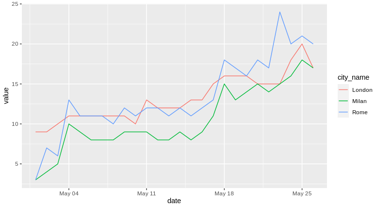

citymappR 🚎️
A simple Citymapper’s API wrapper written in R
Installation
You can install the package running the following command:
remotes::install_github("andodet/citymappR")
# Or using devtools
devtools::install_github("andodet/citymappR")Usage
The package provides access to Citymapper’s API endpoints:
-
citymapper_setup: initialise Citymapper’s api token. Check?citymapper_setupfor different ways of passing the api token. By default the token will be searched in the current working directory. -
check_coverage: check if aone or moregeographical point sfallswithin Citymapper’s covered areas. -
cet_travel_time: comptues travel time between two points using public transport. -
get_mob_idx: Download city mobility index data as dataframe.
Below few simple examples on how tho use these functions:
library(citymappR)
# Set Citymapper's api key
citymappr_setup()
start_point <- "41.889083,12.470514"
end_point <- "41.899009,12.477243"
# Check coverage for a single point
check_coverage(start_point)
# [1] TRUE
# Accepts vectors or lists with multiple points
points_vec <- as.vector(c(start_point, end_point))
check_coverage(points_vec)
# [1] TRUE TRUE
# Get travel time between two points (minutes)
travel_time <- get_travel_time(start_coord = start_point,
end_coord = end_point)
travel_time # [1] 21
library(ggplot2)
cities <- c("rome", "milan", "london")
# Get a sense of how poeple is starting to move again
df <- get_mob_idx(city = cities, start_date = "2020-05-01")
df %>%
ggplot(aes(date, value, colour = city_name)) +
geom_line()
Quotas
Citymapper’s quotas and usage limits apply to citymappeR. At the time of writing, they go as the following for a standard account:
-
check_coverage:- 10 hit/minute or 1000 hit/day for a single point.
- 100 hit/minute or 10000 hit/day for multiple points.
Disclaimer
This package has been developed to familiarise with httr package, jsonlite and unit testing, PRs or issues are more than appreciated.